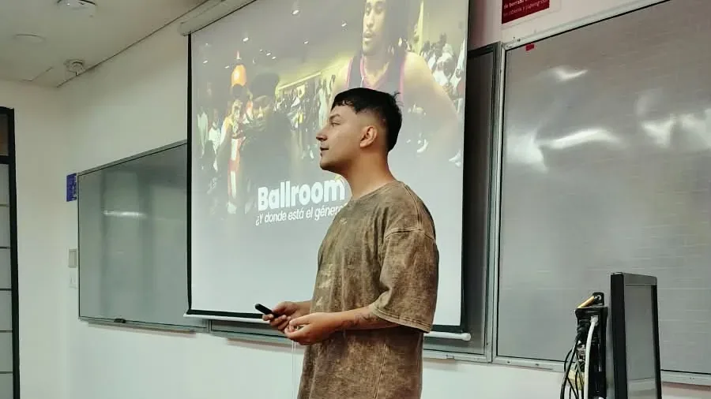

Desde octubre de 2024 trabajo en la Asociación Colombiana de Juventudes como gestor social y analista de comunicaciones. Mi tarea es conectar a las juventudes con las instituciones: diseñar cómo se comunica cada proceso y articular a los actores públicos y comunitarios que lo hacen posible.
Cuerpas que deciden
Diseñé la metodología y coordiné “Cuerpas que deciden”, un espacio de diálogo sobre democracia y diversidades que reunió a 50 personas en su primera edición. Incluyó el taller “Discursos autoritarios y democracia”.
La Asociación Colombiana de Juventudes, Ballroom Cali, Movilizatorio, Jacarandas y El Avispero aportaron logística y apoyo en divulgación.

Gestión de eventos con Ballroom Cali
Junto con Ballroom Cali organicé eventos como “Lilith’s Garden Kikiball 2025”, articulando instituciones regionales, nacionales y a la comunidad. Como gestor cultural voluntario acompaño a la escena Ballroom de la ciudad con espacios de expresión, competencia y visibilización de las diversidades.